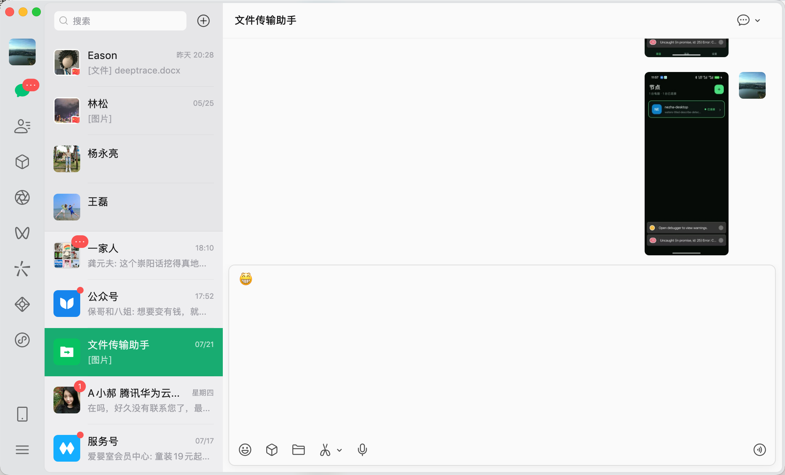
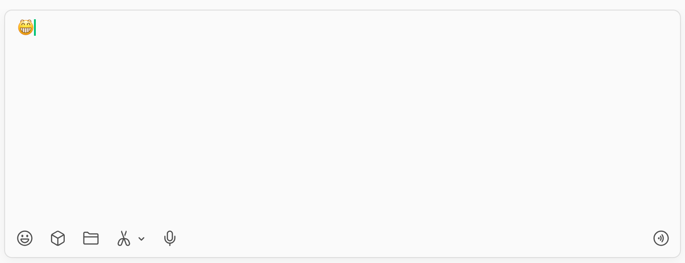

桌面整体参考
冷灰导航、固定会话列表、整行绿色选中态和大面积消息工作区。
资产 06
直接加载保存的原始图像，作为布局、选中态和输入器形态的可审计依据。

冷灰导航、固定会话列表、整行绿色选中态和大面积消息工作区。

文本区在上，表情、文件、截屏和语音工具固定在底部。
源项目没有独立 Logo、字标、应用图标、托盘图标或字体文件；本系统不臆造缺失的品牌资产。线性界面图标由源原型整理到 build/xchat-icons.svg。